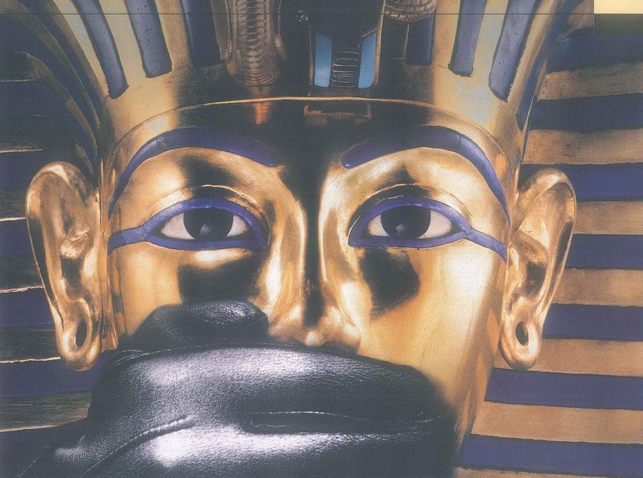
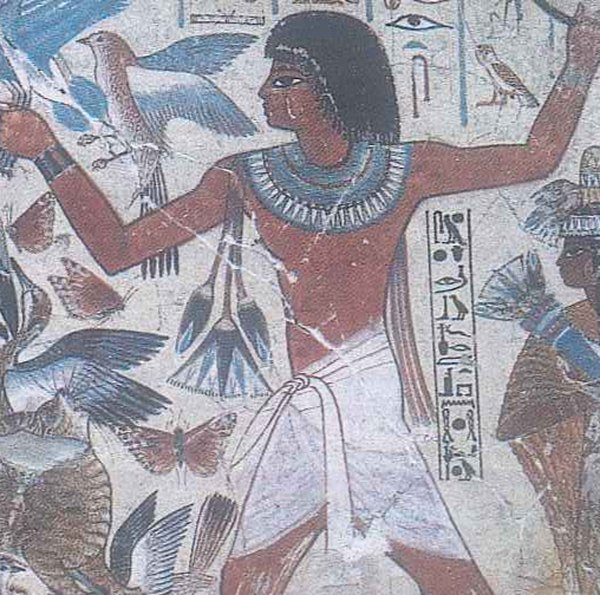
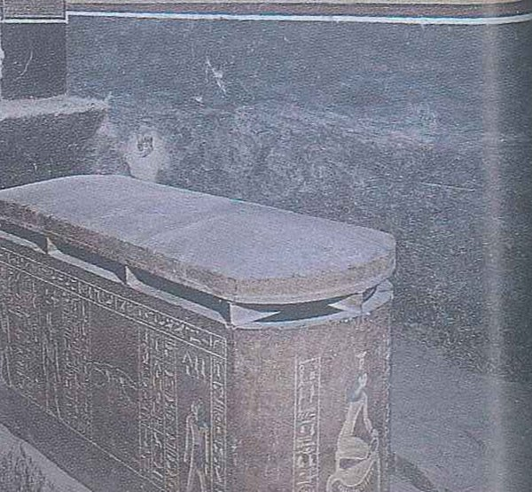

Aims of the lesson & Lead-in
Aims of the lesson
By the end of the lesson, you will be able to:
- Name the words and chunks of 4 groups: ancient history, stealing and protecting the past, emotion words, historical places and talks.
- Explain the uses of one: one of, one or two, one by one, one day and one / ones.
- Tell apart an adjective and an adverb (sad / sadly), and an -ed and an -ing adjective (worried / worrying).
- Infer the writer's attitude in Stealing history from emotion words like hard-working, desperately and sadly.
- Find details, reasons and the writer's purpose in PET Reading Parts 2–4.
- Identify the stages of a talk in Track 91 and the key facts in PET Listening Parts 1, 3 and 4.
- Present a museum for your hometown or a historical place you have visited, with signposts (Let me begin by …) and pauses.
- Describe and evaluate an important historical event or a historical place (Speaking Topics 4–5) with the 7-step frame.
- Argue your view in one academic opinion paragraph of 140–170 words: two reasons with examples, then an answer to the other side.
Lead-in 1 · Treasures from the past — look, guess and react

- Question 1"What is this face made of, and what do you think it was for?"
- Question 2"Why do you think the photographer covered its mouth with a black glove?"
- Question 3"Have you ever seen gold or jewellery this old with your own eyes? Where?"
- Question 1"Which animal does the lid remind you of?"
- Question 2"What do you think people kept inside this jar? Make a guess."
- Question 3"Is there an old object in your family that has been passed down? What is it?"

- Question 1"Who do you think this man was: a king, a soldier or a worker? What makes you think so?"
- Question 2"How do you think people made a statue like this without modern tools?"
- Question 3"Which statue do you walk past most often, at home or near the academy? Who does it show?"

- Question 1"What is the man doing, do you think? Look at his arms and at the birds."
- Question 2"The colours are still bright today. How do you think they lasted so long?"
- Question 3"If you painted one wall about the life of a medical cadet, what would you put on it?"

- Question 1"What do you think this heavy box was for, and where is it?"
- Question 2"Why do you think the lid was made so big and so heavy?"
- Question 3"Would you like to work in a place like this, for example as an archaeologist or a forensic doctor? Why?"

- Question 1"Which country do you think this is? What clues can you see?"
- Question 2"How do you think people carried the stones up so high?"
- Question 3"What is the highest place you have ever climbed to, and how did you feel at the top?"
Lead-in 2 · Agree or disagree?
1 · History is the most useful subject at school.
Model answer
I don't agree. History is interesting, but maths, chemistry and biology are what got me into the academy, and I still use them every week. I'd call history the most meaningful subject, not the most useful.
2 · Old objects belong in museums, not in people's homes.
Model answer
I partly agree. Something like a royal crown or an ancient statue should be in a museum, where experts can look after it and everyone can see it. But my grandfather's old army compass would mean nothing in a glass case, and at home it means a lot to us.
3 · A good presenter never reads from notes.
Model answer
I disagree. In my pharmacology seminar I kept a small card with the drug doses on it, because getting a number wrong is far worse than glancing down for a second. Reading out every line is the problem, not checking one key fact.
4 · Every town needs its own museum.
Model answer
I agree, as long as it's small and cheap to run. My hometown has a two-room museum about the war, and that's where kids first see what their great-grandparents went through. A big museum in a city two hours away just can't do that.
5 · Taking a small stone from a historical site as a souvenir does no harm.
Model answer
I strongly disagree. One stone doesn't seem like much, but a popular site can get thousands of visitors a day, and if each of them took one, the walls would slowly disappear. A photo makes a better souvenir, and it costs the place nothing.
6 · Seeing a place in photos is almost as good as going there.
Model answer
I disagree. Photos can't give you the cold wind on your face or the feeling of standing where people lived hundreds of years ago. I still look at them first, though, to decide if a trip is worth the money.
- I strongly agree / I partly agree / I totally disagree, because …
- It depends on whether …
- From my own experience at the academy, …
- I see your point, but …
Lead-in 3 · Talks and presentations — who gives them, and why?
SB p. 136 Ex 1 · First tell a partner: do you ever give talks or presentations, in Vietnamese or in English? What are they about? Then look at the four situations below.
- Question 1"Who gives short talks in a hospital, and who listens to them?"
- Question 2"Why would a young doctor have to present at the morning meeting?"
Model answer
Every morning on the ward, the doctor who was on night duty reports the new patients to the whole team, usually in two or three minutes. Junior doctors also present unusual cases, so everyone can learn from them. You need to be quick and sure of your numbers.
- Question 1"What kinds of presentations do cadets give at the academy?"
- Question 2"Why do teachers ask you to present instead of only handing in a report?"
Model answer
We present group projects in seminars, and a few cadets present their research at the student science conference every year. Teachers can see straight away whether we really understand a topic or are just repeating the textbook. Standing up in front of a full lecture hall is good training for later, too.
- Question 1"What could someone talk about at a meeting of a local club or the commune council?"
- Question 2"Would you give a health talk in your home village? What would it be about?"
Model answer
At council meetings in my village, people discuss things like a new road or repairs to the old communal house. Last summer a doctor from the district hospital gave a talk there about dengue fever, and people kept asking him questions for an hour. I'd happily do the same about first aid when I'm home on leave.
- Question 1"Who usually makes a speech at a Vietnamese wedding?"
- Question 2"Which events at the academy need a short speech, and who gives it?"
Model answer
At a Vietnamese wedding, an older relative normally speaks for each family, and the speech can go on longer than the guests would like! At the academy there are speeches at graduation and when a commander retires. The best ones are short and a bit funny.
- People give talks at … to …
- The speaker has to …, so …
- I once had to present … and I felt …
- The hardest part for me is …
Lead-in 4 · How many words do you have for each of the 4 groups?
In two minutes, list as many historical objects as you can: a coin, a sword … Then add people and places.
Which words do you know for crimes against the past, and for keeping old things safe?
Which words tell you how a writer feels, like amazing or luckily?
Which words help you describe a famous place, and then give a talk about it?